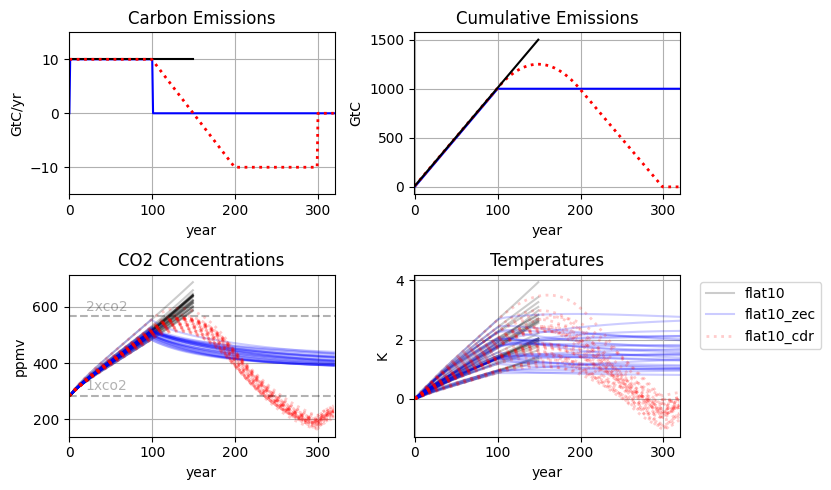

flat10MIP protocol
Experiment tiers
|
Experiment
|
Branches from
|
Years
|
emissions
|
Metrics
|
|
esm-flat10
|
esm-pictrl
|
150 years (From year 0 to year 150)
|
10GtC/year constant emissions, globally homogenous flux
|
TCRE
|
|
esm-flat10_zec
|
esm-flat10 (branch year 100)
|
220 years (From year 100 to year 320)
|
0 GtC/yr constant
|
ZEC50
ZEC100
ZEC200
|
|
esm-flat10_cdr
|
esm-flat10 (branch year 100)
|
220 years (From year 100 to year 320)
|
- Linearly declining emissions by 2GtC/decade from 10GtC/yr (year 100) to -10GtC/Yr (year 200)
- Constant -10GtC/yr (years 200-300)
- Zero emissions for year 300-320
[optional: Zero emissions to year 500]
|
TNZ, TR1000,TR0 (see last section)
|
Emission data
CO2 emissions data for flat10
CO2 emissions data for flat10_zec
CO2 emissions data for flat10_cdr
Full Protocol explainer
- We request a set of 3 emissions-driven experiments to assess TCRE, ZEC and climate reversibility under an idealized net zero transition
- All experiments branch from the DECK experiment esm-picontrol, with an identical data request.
- Experiments will be proposed as candidates for the CMIP7 ESM-DECK
- If not included in the DECK, experiments will be proposed as part of a CMIP7 C4MIP/ZECMIP/CDRMIP effort
- In any case, participating model groups will be offered co-authorship on a manuscript documenting the experiments
Initial Data Request
2D fields, monthly means - CMIP6 naming and unit conventions
(if monthly data not saved, annual OK - analysis in this paper will focus on annual diagnostics, but future studies may need monthly)
All fields on native grid
File naming convention - CMIP6:
<variable_id>_<table_id>_<source_id>_<experiment_id>_<variant_label>_<grid_label>_<time_range>.nc
E.g. tas_Amon_CESM2_flat10-zec_r1i1p1f1_gn_185001-214912.nc
Simulations:
Flat10
Flat10-zec
Flat10-cdr
ATM
- tas
- co2
- Pr
- areacella
- Siconc - Sea-Ice Area Percentage (Ocean Grid)
- Uas - Eastward Near-Surface Wind
- Vas - Northward Near-Surface Wind
- sfcWind - Near-Surface Wind Speed
LND
- nbp
- cLitter
- cSoil
- cVeg
- sftlf
- tsl
- gpp
- hfls
- rh
- ra
- hfss
- Sftgif
- npp
- netAtmosLandCO2Flux
- nVeg
- nLitter
- nSoil
- nMineral
- fBNF
- fNdep
- fNfert
- fNup
- fNnetmin
- fNloss
OCN
- fgco2
- hfds
- Areacello
- Atlantic overturning streamfunction as a function of latitude and depth
- thetao + so (annual) 3D fields
- Sftof
- AMOC timeseries at 26N
- msftmz / msftyz
- tos
- Wo at 50m - Sea water w velocity at 50m
- Tauuo - Surface Downward X Stress
- Tauvo - Surface Downward Y Stress
- Mlotst- MLD defined by sigmaT
- Mlotstmax – max MLD defined by sigmaT
- Wfo - Water Flux into Sea Water (E-P, rivers, sea/land ice).
- Hfbasin - Northward heat transport
- Northward freshwater transport
- SpCO2 - surface_partial_pressure_of_carbon_dioxide_in_sea_water
- Dissicos - Surface Dissolved Inorganic Carbon Concentration (Surface dic)
- Talkos - Surface total alkalinity

Figure 1: emissions, cumulative emissions, CO2 concentrations and Global Mean temperatures in the 4 proposed experiments (flat10, flat10_zec and flat10_cdr) as simulated in a perturbed ensemble of the simple climate model FaIR. Tier 1 experiments have solid lines, while tier 2 experiments are dotted.